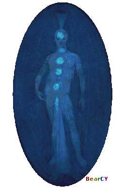
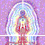

Expression of Consciousness: Higher Will
Statement Consciousness
makes: "I Will"
Consciousness expressed itself as higher will, with which we will things
into being through naming and defining them.
Expression of Health: Divine Will: "Thy will and mine are one"
Expression of Disease: Tries to be superior; Distortions in beliefs
Plane of existence: Spiritual Plane
Chakra: Vishuddha (Throat)
colour: Blueish
The Etheric Template Body (Fifth Layer)
"I call the fifth layer of the aura the etheric template because it contains all the forms that exist on the physical plane in a blue-print or template form. That is, it looks rather like the negative of a photograph. It is the template form for the etheric layer which as was already stated is the template form for the physical body. The etheric layer of the energy field derives its structure from the etheric template layer. It is the blueprint or the perfect form for the etheric layer to take. It extends from about one and one half to two feet (45 to 60 cm) from the bodu. In disease, when the etheric layer becomes disfigured, etheric template work is needed to provide the support for the etheric layer in its original template form. It is the level at which sound creates matter. It is at this level that sounding in healing is the most effective. To my clairvoyant sight, these forms appear as clear or transparent lines on a cobalt blue background, much like an architect's blueprint, only this blueprint exists in another dimension. It is as if a form is made by completely filling in the background space, and the empty space left creates the form.
The etheric template is the template for the etheric body, which then forms the grid structure (structured energy field) upon which the physical body grows. Thus, the etheric template level of the universal energy field contains all the shapes and forms that exist on the physical plane, except on the template level. These exist in negative space, creating an empty space in which the etheric grid structure grows and upon which all physical manifestation exists.
from Barbara Brennan, Hands of Light p.52
http://www.kheper.net/topics/subtlebody/etherictemplate.html
My comments on the Higher Etheric or Spiritual Formative Etheric Body
The Higher Etheric is the first of the higher consciousness bodies. Barbara Brennan refers to this as the "Etheric Template Body", because it is the template form for the Physical Etheric body, just as the gross etheric body is the template for the physical body. Although this is only a two link chain, it still allows for the possibility of higher templates again - the doctrine of emanation and of resonances, of a ladder or octave of grades of being, with the lower depending on the one above it, and that in turn on the one above it.
The higher Etheric Body is referred to here as the carrier of the Will, and any form of individual will originates from here. It could be assumed then that people who have difficulty getting things done have a weakness at this level. However, even the lower or standard etheric body can also be equated with the will, and with what Gurdjieff called the "moving center". Steiner also postulated a triad (presumably following Aristotle and other classical psychologists) of thinking-feeling-willing, altghough he equated the will with the physical body.
It could be speculated that meditation is only possible through the higher Etheric Body. Through the act of Will, the cords in the middle emotional or psychic emotional body - which cause the Physical Mental Body to jump restlessly from one thing to another - are withdrawn, and the attention is then focused on a single point. Often it is very difficult to attain this state, because the Physical Mental and the middle Emotional Bodies are so used to having their own way. Through repeated practice however, the Spiritual Etheric is strengthened, and the lower bodies disciplined. Once emotions, thoughts, and attention are brought under control, gross conceptual thought ceases, and the consciousness resides naturally in the Spiritual Etheric. This is the state referred to in Hindu and Buddhist teachings as Samadhi, Dhyana, or Jhana.
Just as the Physical Etheric Body contains various channels and meridians, in the Spiritual Etheric are found the drops or bijas. When activated, as in Tibetan Buddhism, these produce blissful meditative states. Through the Spiritual Etheric Body one can also contact Inner Divine Centres like the Physical Purusha or True Physical (as it is termed by Sri Aurobindo) and the Hara.
With the higher etheric body we enter the realm of the transpersonal and universal. Here we have for the first time the workings of astrology. Materialistic science criticises astrology on gross physical grounds, and some astrologers deserve this because they attempt to argue their science on the basis of gravitational attraction etc. But if such gross physical factors were behind astrology, the only "planets" worth considering would be the sun and the moon. But in fact astrology pertains to the etheric-spiritual spheres. This is described in detail in the teachings of Rudolph Steiner.
The following table presents some tentative associations and correspondences with the higher etheric body; some of which are quite obvious, others more dubious (but I decided what the heck I might as well include them ;-)
